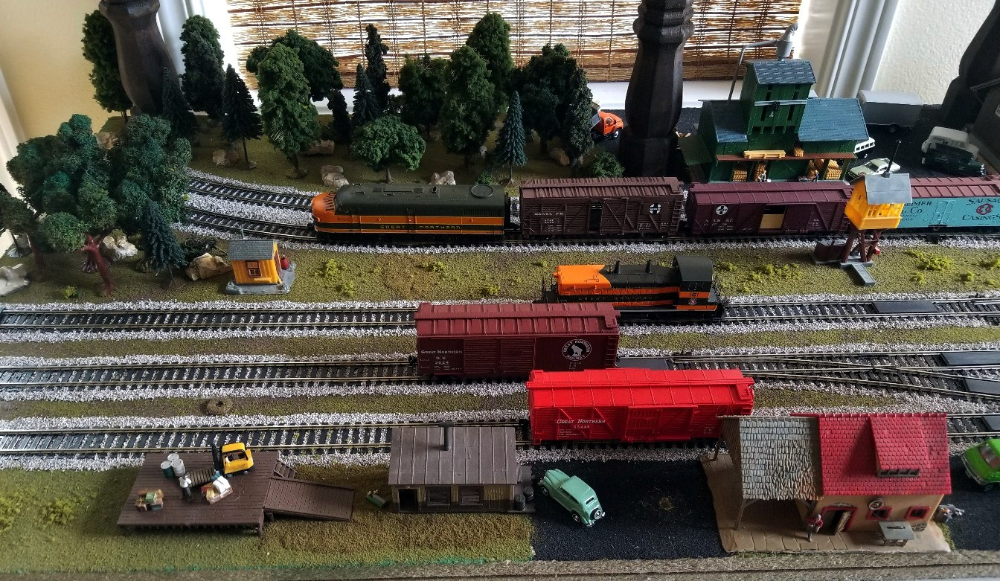

Layout Under The Bed
For many years, due to the lack of space plus 2 cats and a dog, I did not attempt to build another layout when we moved to a new house. Then I decided I could fit a not-quite 7 foot x 2 foot layout under my bed, which would protect it from the animals. However I had to remove the buildings whenever I slid it back under the bed, and I never quite finished it. One fine day my wife said I could put it on a table in the media room, so I bought a table and had it there in 1 day. Now I was motivated to complete the trees, grass, etc. To protect it from the animals, I installed 8 posts and I cut Plexiglas to lay on top, and clear plastic to hang on the sides. This not only keeps the animals off, but also keeps dust off. The posts are easily removed, but I rareyly do, as my mind blanks them out.
The original plan was wired with block control, but I later upgraded to DCC. I started with the famous John Allen's classic switching puzzle, the "TIMESAVER", but I extended the sidings to the max length to give me more options. I also added 2 "main line" tracks, and now I have the main line Alco FA-1 A Unit freight drop off and pickup cars from the intermediate siding, and then the EMD NW2 Phase V Switcher picks up and replaces the dropped off freight. I fire up the GN 2-8-2 Mikado and move the passenger cars to the station, then head out of town. (And then back it up for the next time.) All 3 engines have sound.
4 shots, from left to right

The orignal article on the "Timesaver"
The track plan done with the Atlas tool
The track plan implemented
With the cover on: removes in 2 panels, takes 30 seconds on or off
"Often one plans and builds something that later shows itself to be less interesting or of less value than originally anticipated. Occasionally the reverse is true: the product proves better than hoped for." (John Allen, Model Railroader, November 1972 issue)